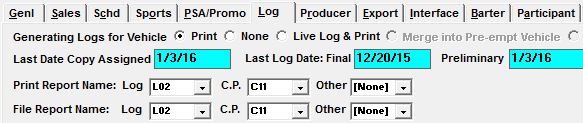
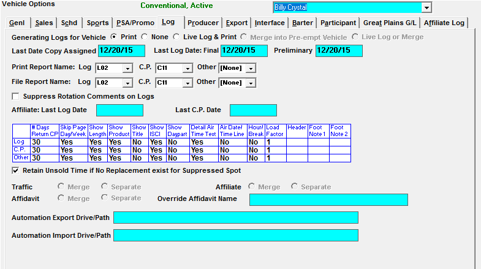
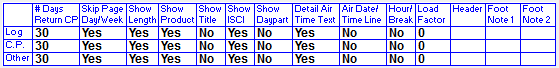

Setup
There are settings that must be configured in Site Options and the Vehicle Screens prior to generating logs.
Traffic.ini Configuration
There are two paths in Traffic.ini that affect logs: LogGenExport and Logo.
Log Export Folder
All report PDFs are saved to the folder defined in the Save Reports path of the Traffic.ini. If however, you wish for log/CP PDFs to be saved to a different folder, you can point the LogGenExport path to a location of your choice.
Example: LogGenExport = x:\csi\prod\logGenExport
For Logs to be saved to a unique folder, you must:
- Create a folder in which to save the logs.
- Define that folder in the LogGenExport Traffic.ini path.
- Select log and CP formats in the File Report name fields in the Vehicle Options Log Tab, as shown below.

Each Log can have a unique BMP logo. Those logos must reside in a folder and that folder’s path must be defined in the Traffic.ini.
Example: Logo = C:\CSI\Prod\Data
Log and Certificate of Performance Logos
Each Logo must be a .BMP file and be named G##.BMP, with the two pound signs being replaced by a two digit number, for example, G01.BMP, G02.BMP, etc.
Keep a list of which G## is the logo for each vehicle. When you have created them all, move them into the x:\CSI\PROD\DATA directory. In the Logs Screen, click on the Logo dropdown at the far right of the CP column, and select the proper logo for each vehicle (you cannot select the Logo dropdown unless you have a CP name in the CP column and Tab to the Logo column).
Test each CP to ensure the logo appears correctly. The system will retain the logo you have assigned to the vehicle for the Certificate of Performance.
If a logo is defined for a log, but that G##.BMP is missing from the CSI\Prod\Data folder, you will receive the following warning message: "Gxx.bmp does not exist in [logo path on traffic.ini]. Copy into [logo path on traffic.ini]."
Site Options Setup
The following tabs on the Site Options screen affect log generation: Log, Schedule (Schd), Export (Expt).
Schedule Tab
- Ask Disposition of Commercial Changes when Generating Logs: When checked, this will bring up a question that asks “Delete commercial changes?” when generating logs
Export Tab
- Using Station Codes: If checked on, you will be able to enter a Station code per vehicle, which will be used to identify Logs and CPs saved to PDF.
Log Tab
- Use Blackouts on Logs: Activates the blackout suppression and replacement feature on the log screen
- Default Log ‘Assign Copy’ On or Off: If “On” is selected, the assign copy checkbox will be checked on by default. If “Off” is selected, by default, it will not be checked.
- Allow Preliminary Logs: When checked, this option allows you to print a preliminary log. Preliminary logs will not advance the last log date. You must run the final log to advance the date.
- Allow Display of Final Logs: If checked, this will allow Final Logs to be displayed.
Vehicle Setup
General Screen
Enter a Station Code to identify Logs and CPs saved to PDF. PDF files will be saved to the CSI\Prod\Export folder.
Vehicle Options Log Tab
The Log Tab is where you set your log parameters and customize your logs.

Generating Logs for Vehicle
- Print: Will allow the Vehicle to print or PDF a log
- None: If None is selected, no log will be generated, however the log dates will advance, and the vehicle will be able to be exported to an automation system. This is not an option if your log has to go to the Electronic Affidavit System
- If “none” is checked, when a log is generated for a Sunday, and there is a time zone table defined for the vehicle, the system locks avails on Monday that were already generated on the Sunday log for all non-Eastern time zones
- For example, if a 10pm Pacific Time Sunday spot is actually coming from 1am Eastern on Monday, the 1am Eastern avail will be locked since it was trafficked and closed in advance
- This also affects selling vehicles. The system will look at the times of the selling and airing links, and lock the appropriate selling avails. Here are two examples of how this will work:
- A 4am selling avail that links to a 2am airing avail: the 4am selling avail will be locked since it is trafficked and closed in advance
- A 2am selling avail that links to a 4am airing avail: the 2am selling avail will not be locked
- Live Log & Print: This option allows a log to be printed, and allows the vehicle to be reconciled through Live Log
- Merge into Pre-empt Vehicle: This option is used if a sports vehicle is pre-empting another vehicle AND you want the sports vehicle’s spot information to merge onto the pre-empted vehicle’s log. This option is particularly useful if the event needs to be merged onto a 24 hour log for automation and reconciliation purposes
- Live Log or Merge: This option is used if a sports vehicle is pre-empting another vehicle AND you want the option of either merging the event information onto the pre-empted vehicle’s log to be reconciled via an automation system, OR exporting the event information to Live Log for reconciliation
In the “Last Log Date: Final” field, enter the day before the first week that you will be generating final logs for. Once entered and saved, it will update automatically after each log generation.
From the “Print Report Name” fields, select the different log formats that you wish to use when you print the log. You can select one log format from the “Log” dropdown, one CP format from the “CP” dropdown, and an additional log or CP format from the “Other” dropdown. You can also define which formats to use when saving to file by selecting the log/CP formats from the “Print Report Name” fields.
Affiliate Last Log Date: This is updated when the log information is printed from the Affiliate System. If this vehicle is for the affiliate system this date would be set to the date before the vehicle is live on the Affiliate System.
Last CP Date: This is updated when CP’s are printed from the Affiliate System. If this vehicle is for the affiliate system this date would be set to the date before the vehicle is live on the Affiliate System.
Set up customizable log items on the customization grid (shown below). Not all log formats use these customization options.

Retain Unsold Time if No Replacement exist for Suppressed Spot: When this option is selected, the log/CP will show the unsold time when a spot has been suppressed in the Blackout feature.
Merge Feature
If you merge vehicles onto a Log Vehicle, you can control the areas of the system in which spots will and will not merge by selecting the appropriate fields for the vehicles that make up the log vehicle.

- “Traffic”: This will cause vehicles to merge onto one Traffic log (Merge), or produce separate Traffic logs (Separate).
- “Affiliate”: This allows an affiliate agreement to be created for the Log vehicle (Merge), or for the individual vehicles that make up the Log vehicle (Separate).
- “Affidavit”: This will allow your affiliates to post all merged vehicles on one affidavit (Merge), or each vehicle on a separate affidavit (Separate).
Override Affidavit Name: This name will override the traffic vehicle name and appear on the CSI Electronic Affidavit System web log and affidavit instead of the traffic vehicle name.
Automation Export/Import Drive/Path: You can enter the path of the folder where your Automation exports and imports are stored for easy exporting and importing.